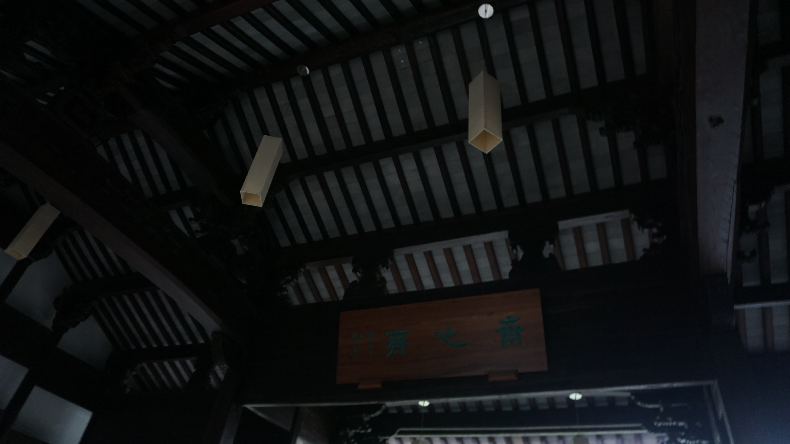
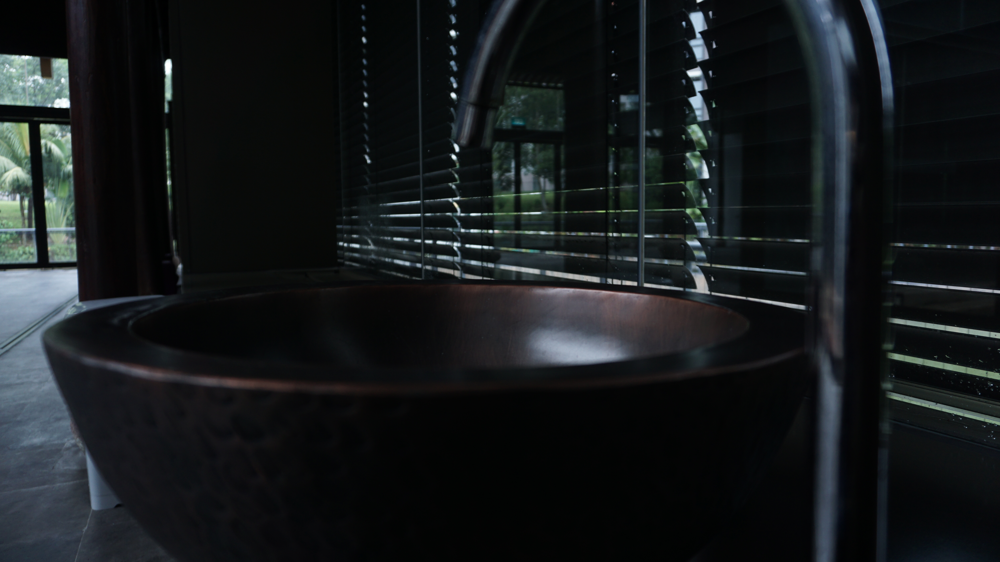
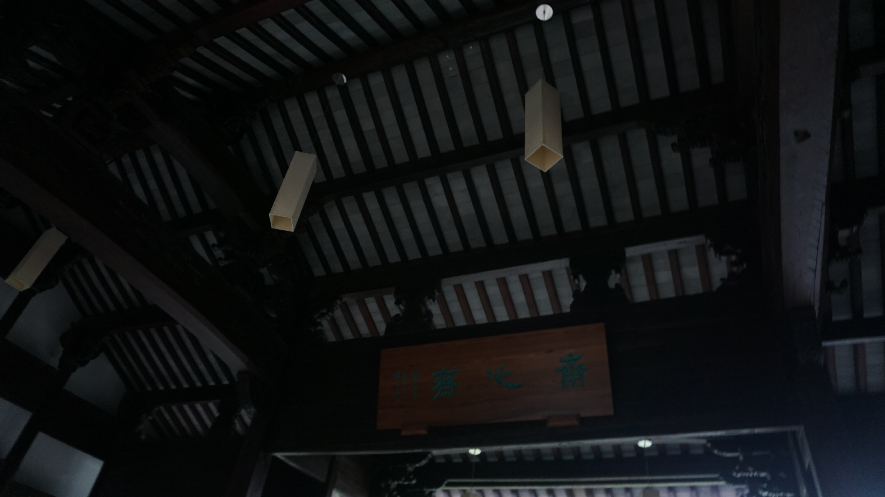
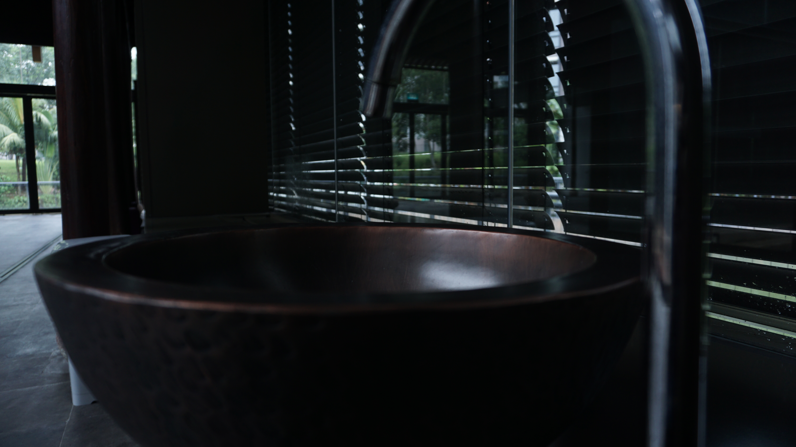
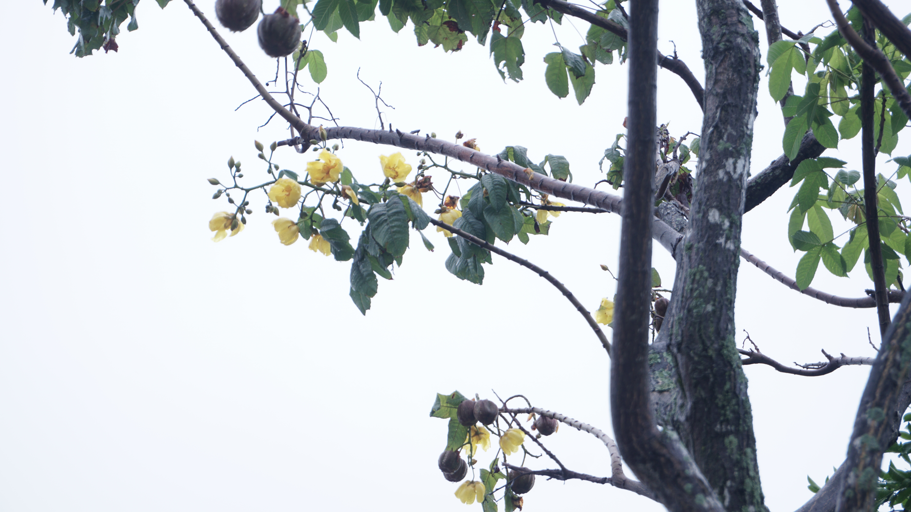
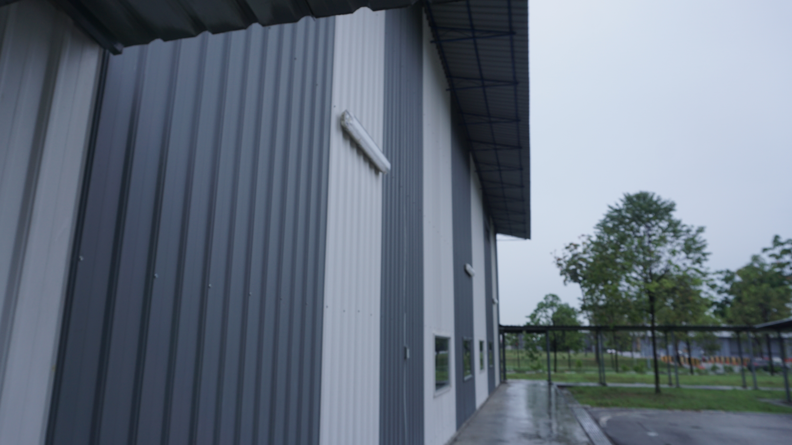
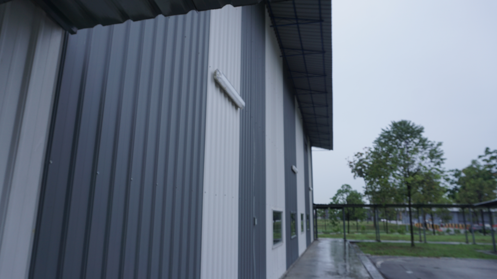

Hover on the icons to see the pictures!
There was a slight drizzle in the afternoon. We started our walk from the canteen to the garden behind Block 57 of the hostel area.

One interesting tree in the area was the money tree. It has palm-like leaves and has medicinal uses such as relieving anxiety and improving sleep. It is also said to bring the owner good fortune!


We entered the Traditional Chinese House. The interior of the house was spacious and wide, with strong wooden pillars supporting from below. One room even had a wood-carved sink that is smooth and embodying the essence of the true Chinese craftmanship.

 



Here we see the trees at the back gate. This particular tree, Bucida molineti, is also called a "Dwarf Geometry Tree" and has a unique layered umbrella shape. It shielded us from the rain!


This EC may look like a dull workshop but it is a place where innovative ideas are born!
 
